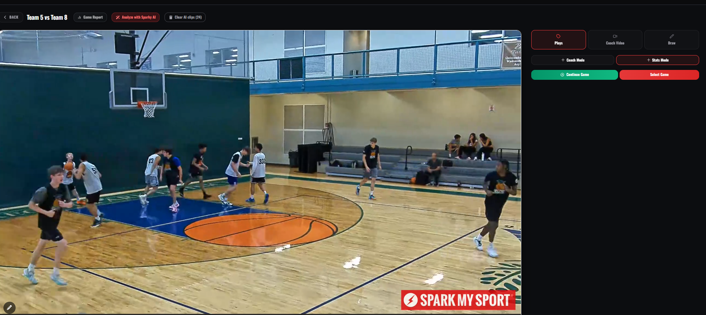
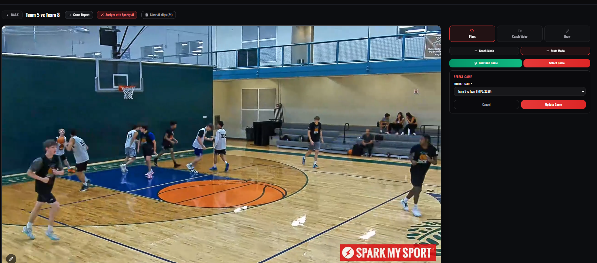
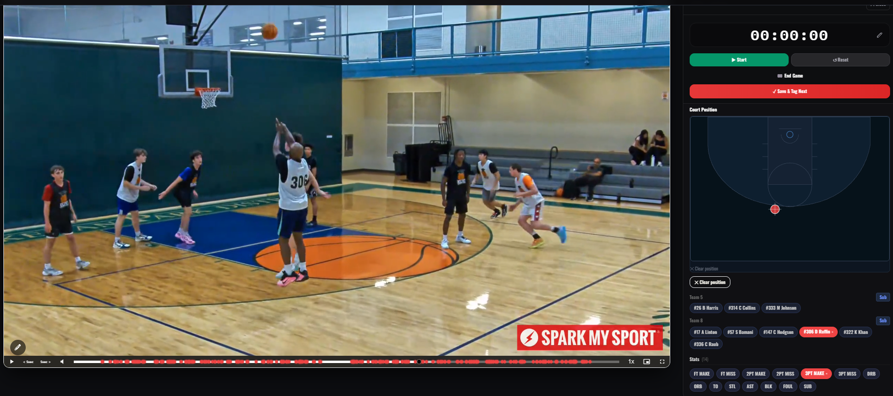
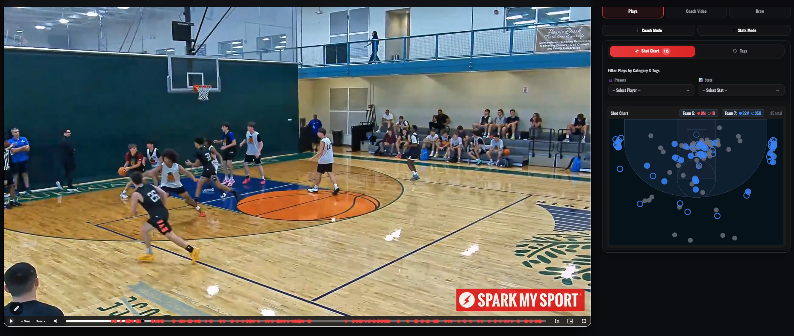

Do It Yourself (DIY)
Using Spark Editor
You Stat the Plays. Our AI Does the Rest.
Turn any basketball game film into performance intelligence using Spark Editor. No special equipment or technical expertise required. Watch the game, tag the plays and stats, and let Spark My Sport AI turn that data into meaningful insights.
Select Your Game
Open your game film in Spark Editor and select the game you want to analyze.

Enter Stats As You Watch
Watch the film and quickly tag plays such as 2PT Make/Miss, 3PT Make/Miss, FT, Rebounds, Assists, Steals, Blocks, Turnovers, and Fouls.

Tag the Player & Court Position
Select the player involved and mark the location on the court. Spark Editor connects the player, play, stat, video timestamp, and court position.

AI Builds the Intelligence
As you stat the game, Spark My Sport AI does the rest, organizing the data and connecting every stat back to the game film.
See the Game Differently
Get shot charts, player performance insights, searchable plays, video clips, and game analytics, all connected to the original film.

Simple. Fast. No 24-hour wait. Your insights are built as you stat the game.